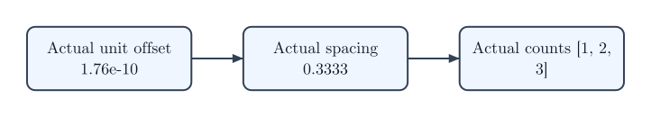
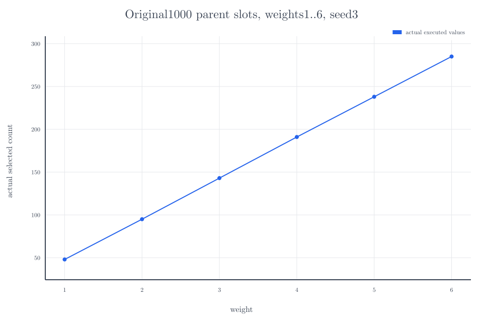
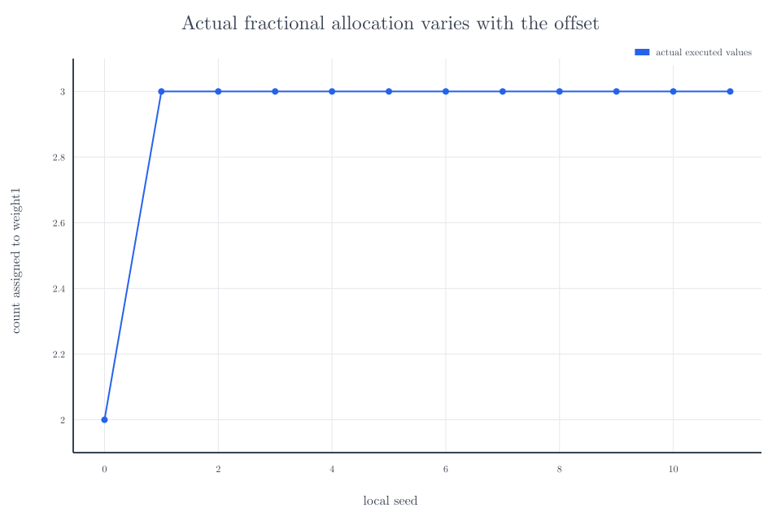
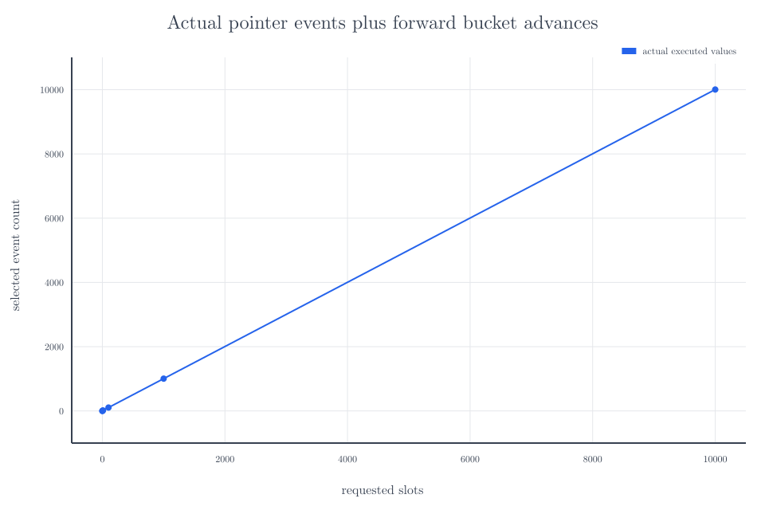

SUS: one actual random offset and equally spaced pointers
Abstract
Stochastic universal sampling allocates a fixed number of parent slots using one offset and a comb of evenly spaced pointers. Actual pointer locations and half-open cumulative buckets explain each selected row.
Mechanism and mathematical scope
For total W and n>0 use spacing W/n and points(U+k)*W/n for k=0..n-1. In exact arithmetic with continuous uniform U, row i receives floor or ceil of e_i=n*w_i/W. Its marginal mean is e_i and variance f_i(1-f_i), with f_i the fractional part. Counts are dependent, so this is not universal variance dominance for all aggregate statistics. The native historical xorshift top53-bit offset is a finite grid and floating cumulative geometry is approximate. Maximum normalization and widened sums reduce overflow; lost positive mass is rejected.
A tiny actual producing history
The table and native concept diagram read the same producing execution. Every block below is a complete editable C++ program.
#include <dm/dm.hpp>
int main() {
namespace a = dm::algorithms;
namespace g = dm::graphics;
std::filesystem::create_directories("build");
auto r = a::sus_trace({1, 2, 3}, 6, 3);
std::print("Offset {:.17g}; actual spacing {:.12g}.\n\n| actual pointer | position | selected row |\n| " "---: | ---: | ---: |\n",
r.unit_offset, (double) r.spacing);
for (const auto &s : r.pointers)
std::print("| {} | {:.12g} | {} |\n", s.pick, (double) s.position,
s.selected);
g::Diagram concept_diagram(48, 1100);
concept_diagram.node("n0", {0, 0},
std::format("Actual unit offset {:.4g}", r.unit_offset));
concept_diagram.node("n1", {5, 0},
std::format("Actual spacing {:.4g}", double(r.spacing)));
concept_diagram.node("n2", {10, 0},
std::format("Actual counts {}", r.counts));
concept_diagram.edge("n0", "n1").edge("n1", "n2");
concept_diagram.save_svg("build/stochastic_universal_sampling_tiny.svg");
}Offset 1.7600987334276397e-10; actual spacing 0.333333333333.
| actual pointer | position | selected row |
|---|---|---|
| 0 | 5.86699577809e-11 | 0 |
| 1 | 0.333333333392 | 1 |
| 2 | 0.666666666725 | 1 |
| 3 | 1.00000000006 | 2 |
| 4 | 1.33333333339 | 2 |
| 5 | 1.66666666673 | 2 |

The retained original experiment
#include <dm/dm.hpp>
int main() {
namespace a = dm::algorithms;
namespace g = dm::graphics;
std::filesystem::create_directories("build");
auto r = a::sus_run({1, 2, 3, 4, 5, 6}, 1000, 3);
std::vector<double> x, y;
std::print("| original row | weight | actual count | ideal expected |\n| ---: | ---: | ---: | ---: |\n");
for (std::size_t i = 0; i < 6; ++i) {
x.push_back(i + 1);
y.push_back(r.counts[i]);
std::print("| {} | {} | {} | {:.9g} |\n", i, i + 1, r.counts[i],
(double) r.expected[i]);
}
std::print("Actual raw RNG words {}, bucket advances {}.\n", r.random_words,
r.boundary_advances);
auto plot = g::RPlot::create();
plot.lines(x, y, "actual executed values", {37, 99, 235}).points(
x, y, {37, 99, 235}, 4).title("Original1000 parent slots, weights1..6, seed3").x_label("weight").y_label("actual selected count");
plot.save_svg("build/stochastic_universal_sampling_original.svg");
}| original row | weight | actual count | ideal expected |
|---|---|---|---|
| 0 | 1 | 48 | 47.6190476 |
| 1 | 2 | 95 | 95.2380952 |
| 2 | 3 | 143 | 142.857143 |
| 3 | 4 | 191 | 190.47619 |
| 4 | 5 | 238 | 238.095238 |
| 5 | 6 | 285 | 285.714286 |
Actual raw RNG words 1, bucket advances 5.

Explicit controls
#include <dm/dm.hpp>
int main() {
namespace a = dm::algorithms;
namespace g = dm::graphics;
std::filesystem::create_directories("build");
std::vector<double> x, y;
std::print("| seed | zero-mass row | positive rows actual counts | actual RNG words |\n| ---: | ---: | " "--- | ---: |\n");
for (unsigned seed = 0; seed < 12; ++seed) {
auto r = a::sus_run({0, 1, 2, 0}, 7, seed);
x.push_back(seed);
y.push_back(r.counts[1]);
std::print("| {} | {} | `{}` | {} |\n", seed, r.counts[0] + r.counts[3],
r.counts, r.random_words);
}
auto z = a::sus_run({0, 0}, 0, 3);
std::print("Zero picks: {} draws, counts `{}`.\n", z.random_words, z.counts);
auto plot = g::RPlot::create();
plot.lines(x, y, "actual executed values", {37, 99, 235}).points(
x, y, {37, 99, 235}, 4).title("Actual fractional allocation varies with the offset").x_label("local seed").y_label("count assigned to weight1");
plot.save_svg("build/stochastic_universal_sampling_controls.svg");
}| seed | zero-mass row | positive rows actual counts | actual RNG words |
|---|---|---|---|
| 0 | 0 | [0, 2, 5, 0] | 1 |
| 1 | 0 | [0, 3, 4, 0] | 1 |
| 2 | 0 | [0, 3, 4, 0] | 1 |
| 3 | 0 | [0, 3, 4, 0] | 1 |
| 4 | 0 | [0, 3, 4, 0] | 1 |
| 5 | 0 | [0, 3, 4, 0] | 1 |
| 6 | 0 | [0, 3, 4, 0] | 1 |
| 7 | 0 | [0, 3, 4, 0] | 1 |
| 8 | 0 | [0, 3, 4, 0] | 1 |
| 9 | 0 | [0, 3, 4, 0] | 1 |
| 10 | 0 | [0, 3, 4, 0] | 1 |
| 11 | 0 | [0, 3, 4, 0] | 1 |
Zero picks: 0 draws, counts [0, 0].

Actual selected work and sensitivity
#include <dm/dm.hpp>
int main() {
namespace a = dm::algorithms;
namespace g = dm::graphics;
std::filesystem::create_directories("build");
std::vector<double> x, y;
std::print("| slots | actual RNG words | actual bucket advances | selected indices |\n| ---: | ---: | " "---: | ---: |\n");
for (int n : {0, 1, 10, 100, 1000, 10000}) {
auto r = a::sus_run({1, 2, 3, 4, 5, 6}, n, 3);
x.push_back(n);
y.push_back(r.indices.size() + r.boundary_advances);
std::print("| {} | {} | {} | {} |\n", n, r.random_words,
r.boundary_advances, r.indices.size());
}
auto plot = g::RPlot::create();
plot.lines(x, y, "actual executed values", {37, 99, 235}).points(
x, y, {37, 99, 235}, 4).title("Actual pointer events plus forward bucket advances").x_label("requested slots").y_label("selected event count");
plot.save_svg("build/stochastic_universal_sampling_work.svg");
}| slots | actual RNG words | actual bucket advances | selected indices |
|---|---|---|---|
| 0 | 0 | 0 | 0 |
| 1 | 1 | 0 | 1 |
| 10 | 1 | 5 | 10 |
| 100 | 1 | 5 | 100 |
| 1000 | 1 | 5 | 1000 |
| 10000 | 1 | 5 | 10000 |

API and interpretation
Weights must be finite and nonnegative; positive picks require positive mass. Zero picks consume no random word after validating weights. Zero-weight rows are skipped. A positive normalized increment lost to floating precision throws explicitly; extreme finite dynamic ranges are therefore not unconditionally supported. Seed0 retains the historical nonzero fallback. Counts and offset are captured by the same kernel as the compatibility API.
Reusable producers, fixtures and histories live in the canonical C++ library. Captured records own their values and do not come from a separate report replay. Selected counters and record/scalar policies are specified at their API boundaries; they are not peak-byte or wall-time budgets. Synthetic structural inputs are controlled fixtures for these mechanisms.
References
- Baker, Reducing Bias and Inefficiency in the Selection Algorithm, ICGA1987,14-21
Verified in the shared ten-document batch: 58 scoped native cases;20 directly
instrumented ASan/UBSan cases;90 executable public examples;416/416 definitions
across25 full scopes;10 hovers;1968 independent records/417332 checks;frozen
comparisons across all ten families with SIP returned-iterate correction
recorded;14 checkout/installed standalone headers and linked ten-family
consumer;40 executed programs and40 inspected figures with both exports.
Receipts: build/mepml-conversion/batch-374-383/.